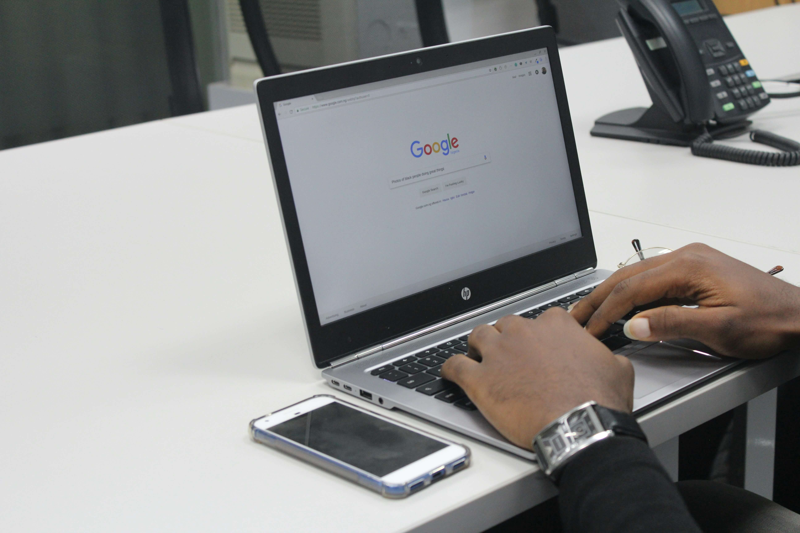

Portfolio
Marketing Page
This project shows the front page of a marketing website meant for a specific business I'm intrested in.

Search Page
This project searches through a specific database to find information that the user is trying to look up.
Travel App
This project compares travel times based on different transportation methods and tells you the best one.
Map of Favorite Spots
This project uses mapping apis to plot points for my favorite spots in the city for a do-it-yourself walking tour.
Photo Gallery
This project shows pictures from a recent trip to the viewer and allows them to easily navigate through photos.
Calculator
Someone can enter in the numbers they want, and press the big blue button and get the result.